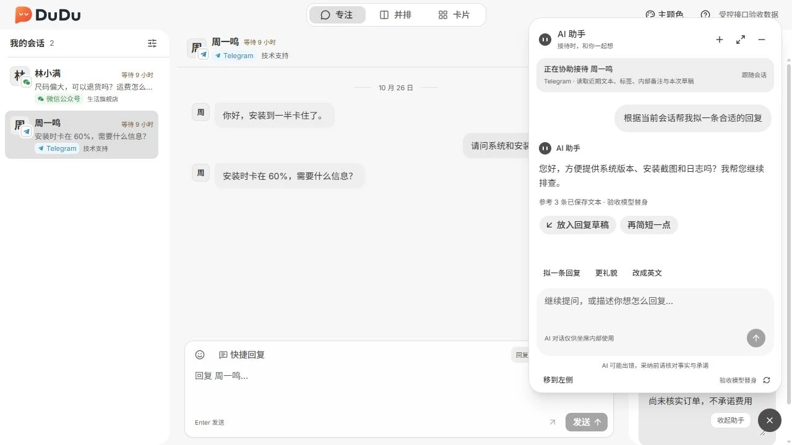

DuduDesk / 坐席工作台
集中处理渠道来信，保留每次接待的上下文。
面向日常接待的坐席，在同一工作区查看会话历史、发送回复并维护来访资料。支持浏览器访问，也可构建桌面端。

用熟悉的语言阅读消息
点击消息翻译，或在工作台设置中开启自动翻译。译文与原文同时显示，翻译服务由初始企业管理员在 Console 配置。

接待时，随时展开 AI 助手
结合当前授权会话了解来意、拟写回复和润色草稿。助手跟随当前回复对象，建议由坐席采纳到草稿，核对后发送。

主要功能
统一会话
在授权范围内查看渠道会话，使用搜索与筛选定位需要处理的来信。
三种接待布局
专注、并排和卡片布局共享会话数据与草稿，按接待方式选择视图。
消息与回复
查看历史和实时来信，发送纯文本回复，并查看发送结果。
共享来访资料
维护有权限员工之间共享的来访标签和内部备注。
消息阅读翻译
逐条点击翻译或开启自动翻译，保留原文并选择自己的阅读语言，不改变发送正文。
AI 悬浮助手
结合当前授权会话了解来意、拟写回复和润色草稿。助手跟随当前回复对象，建议由坐席采纳到草稿，核对后发送。
使用流程
- 使用企业员工身份登录，读取当前用户组授权的会话范围。
- 选择会话、阅读历史并回复来信。
- 维护标签和内部备注，根据需要结束或继续接待。
使用条件与范围
当前仅支持发送纯文本，暂不支持发送附件。接收非文本消息和读取媒体取决于渠道能力与凭据。
各模块配合使用：Admin 开通企业，Console 配置团队与渠道，Desk 负责接待，Server 提供共用服务。MockPulse 为可选的开发联调工具。